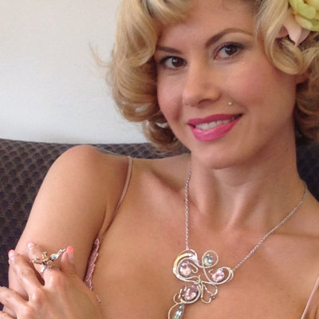

--- 
title: Resident Artist
layout: "base"
order: 4 
permalink: resident-artist 
---

<div class="container mt-5">
  <h3>Marla Trudine</h3>
  <div class="row">
    <div class="col-12 col-sm-5 col-md-4 col-lg-3 order-sm-2">
        
    </div>
    <div class="col-12 col-sm-7 col-md-8 col-lg-9 order-sm-1">
        <p>
            My jewelry is an expression of bold femininity. Fluid lines of pure emotion that dance, cascade, intertwine and explode with
            color. Each piece in some way represents the strength of femininity and strives to portray the paradoxical dichotomy
            between the feminine ability to be both powerful and delicate, sophisticated yet playful, heroic yet whimsical.
        </p>
        <p>
            I learned the craft of jewelry design and fabrication from my boundlessly talented mother. I became her apprentice as a child
            and have now been immersed in the art form for nearly 30 years.
        </p>
        <p>
            My hand crafted one-of-a-kind wearable sculptures, forged in gold and silver, combine precious, semi-precious, and breathtaking
            hand carved stones, to create designs that invoke the feelings of ethereal beauty, powerful form, and “other worldly”
            whimsical images of nature.
        </p>
        <p>
            There is something special and intimate about creating jewelry, and my inspiration flows from my fierce adoration and observation
            of nature, my travels, and by my focused studies of the art nouveau, art deco, and renaissance periods of art history.
        </p>
        <p>
            Bringing fine art jewelry to my customers in the hopes of giving them a means to visual self expression is, to me, one of
            the most sacred arts that I aspire to be a part of.
        </p>
    </div>
</div>
<div class="row align-items-center no-gutters text-center gallery bg-black rounded">
    {% assign pics = site.static_files | where_exp:"item", "item.path contains 'img/marla/gallery'" %} {% for item in pics %}
        <div class="col-6 col-sm-4 col-md-3 col-lg-2">
            {% assign title = item.basename | split: '_' %}
            <a href="{{ item.path }}" data-lightbox="jewelry">
                
            </a>
        </div>
    {% endfor %}
</div>
</div>